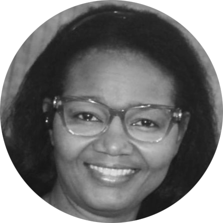

Maryse Charles-David

Developper | Lead Case Manager
- Familiarity with multiple programming languages, software development methods.
- Good sense of detail and analysis, problem-solving skills, and ability to work effectively as a team.
- Organized and diligent with significant experience in customer service.
Work Experience
Commonwealth Care Alliance | Raynham, MA
May 2024 to Present
- Review guidance from EOHLC and CCA leadership and provide coaching and guidance to team
members.
- Support Site Manager to ensure compliance with agency policies and regulatory requirements.
- Generate reports on case activities
- Managed a caseload of 25 family, providing comprehensive case management services
- Conducted thorough assessments to identify client needs and develop individualized care plans
- Collaborated with interdisciplinary teams to coordinate and monitor the delivery of services
- Advocated for clients rights and ensured access to appropriate resources and support system
Web Developper | Freelence
July 2022 to Present
- Designed user-friendly interfaces that enhance the overall user experience (UX).
- Developed, installed, and configured internal applications, as well as new application releases into test
and production environments.
- Developed web and mobile applications, consolidating, and saving customer information from various
databases and servers.
- Developed and maintained responsive websites using HTML, CSS, and JavaScript.
- Utilized version control systems such as Git for code management and collaboration.
- Used JavaScript frameworks like React or AngularJS for building dynamic web applications
Education
-
Short graduate program in Software Engineering
UQAM University-Montréal, QC
September 2022 to April 2023
-
Bachelor of Science in Computer Science
UQAM University-Montréal, QC
September 2018 to June 2022
Skills
- HTML/CSS/JavaScript.
- Git/GitHub/Agile/Scrum Methodology .
- Problem-solving – debugging, logic, and finding smart solutions.
- Adaptability – learning new tools or switching tasks quickly.
- Used JavaScript frameworks like React or AngularJS
- Time management – balancing multiple tasks or deadlines
Languages
- Haitian Creole
- French
- English
Contact Me